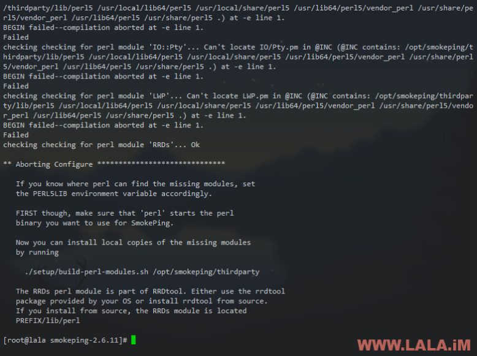

SmokePing是一款完全免费的可以用来监控IDC网络质量的工具，并且它有一个基于RRDTool绘图的前端展示界面，用户可以直观的通过浏览器查看各类监控信息。
这东西虽然年代久远，但是说实在的现在很多搞运维的都还在用这个。并且SmokePing的作者今年还炸了个尸，竟然心血来潮的更新了一个新版，不过今天LALA还是选择教大家安装旧版本，因为我装了新版和旧版对比了一下，发现新版的界面真的比旧版丑。。。
当然，我个人更推荐大家使用Zabbix，毕竟Zabbix无论是在功能方面还是在安装配置方面都是完爆SmokePing的，今天写一篇SmokePing的安装教程，其实也是无奈之举，因为我比较喜欢SmokePing的图形风格。
Zabbix安装和使用教程：
进入正题：
安装EPEL源：
yum -y install epel-release
安装绘图工具：
yum -y install rrdtool perl-rrdtool
安装SmokePing所需的扩展：
yum -y install perl-core openssl-devel fping curl gcc-c++
这里我们就先装这些，待会在编译SmokePing的时候，如果不成功的话，SmokePing会给我们提供一个脚本来帮助我们安装未安装的依赖。
下载SmokePing源码：
wget https://oss.oetiker.ch/smokeping/pub/smokeping-2.6.11.tar.gz
解压：
tar -xzvf smokeping-2.6.11.tar.gz
进入到目录内：
cd smokeping-2.6.11
尝试配置：
./configure --prefix=/opt/smokeping
不出意外的话，这里会报错：

根据提示运行SmokePing给我们准备的脚本，来自动帮我们安装依赖：
./setup/build-perl-modules.sh /opt/smokeping/thirdparty
稍等一会儿，安装完成后如图所示：

重新尝试配置：
./configure --prefix=/opt/smokeping
这次应该就能成功了：

安装：
make install
安装成功后如图所示：

现在开始配置SmokePing。
进入到SmokePing的WEB目录：
cd /opt/smokeping/htdocs
新建三个目录：
mkdir cache mkdir data mkdir var
并将目录内的fcgi文件重命名：
mv smokeping.fcgi.dist smokeping.fcgi
修改一下权限，防止待会运行出错：
chmod 600 /opt/smokeping/etc/smokeping_secrets.dist
进入到smokeping的etc目录内：
cd /opt/smokeping/etc
复制一份配置文件：
cp config.dist config
编辑它：
vi config
修改imgcache、datadir、piddir的路径为如图所示：

知道你们懒，这里给你们复制一下路径：
imgcache = /opt/smokeping/htdocs/cache datadir = /opt/smokeping/htdocs/data piddir = /opt/smokeping/htdocs/var
接着往下翻，在如图所示箭头所指的地方修改一个你准备监控的服务器或是VPSIP，这里我是安装配置教程，所以先不讲太多监控的方法，这里先随便写一个IP：

确定修改好了后，退出并保存。进入到smokeping的bin目录：
cd /opt/smokeping/bin
用debug模式先尝试运行看看：
./smokeping --config=/opt/smokeping/etc/config --debug
看到如下图回显就说明运行正常：

现在正式运行smokeping并开启日志记录：
./smokeping --config=/opt/smokeping/etc/config --logfile=smoke.log
接着我们安装Nginx来反向代理SmokePing的FCGI程序，以实现WEB访问：
yum -y install nginx
由于Nginx本身是不支持直接访问FCGI的，所以这里我们要安装一个spawn-fcgi：
yum -y install spawn-fcgi
将SmokePing的WEB目录所有者改为Nginx：
chown -R nginx:nginx /opt/smokeping/htdocs
用spawn-fcgi以nginx用户来启动SmokePing的FCGI程序：
spawn-fcgi -a 127.0.0.1 -p 9007 -P /var/run/smokeping-fastcgi.pid -u nginx -f /opt/smokeping/htdocs/smokeping.fcgi
在Nginx的conf.d目录内新建一个SmokePing的站点conf：
vi /etc/nginx/conf.d/somkeping.conf
写入如下内容：
server { listen 80; server_name localhost; location / { root /opt/smokeping/htdocs/; index index.html index.htm smokeping.fcgi; } location ~ .*\.fcgi$ { root /opt/smokeping/htdocs/; fastcgi_pass 127.0.0.1:9007; include /etc/nginx/fastcgi_params; } }
接着编辑Nginx的主配置文件：
vi /etc/nginx/nginx.conf
用vi命令清空这个配置文件内的所有内容，输入:号加上如下命令然后回车即可：
.,$d
命令如图箭头所示：

接着复制粘贴下面的内容到nginx.conf内：
user nginx; worker_processes 1; error_log /var/log/nginx/error.log warn; pid /var/run/nginx.pid; events { worker_connections 1024; } http { include /etc/nginx/mime.types; default_type application/octet-stream; log_format main '$remote_addr - $remote_user [$time_local] "$request" ' '$status $body_bytes_sent "$http_referer" ' '"$http_user_agent" "$http_x_forwarded_for"'; access_log /var/log/nginx/access.log main; sendfile on; #tcp_nopush on; keepalive_timeout 65; #gzip on; include /etc/nginx/conf.d/*.conf; }
如图所示：

启动Nginx：
systemctl start nginx
关闭CentOS7的防火墙：
systemctl stop firewalld.service systemctl disable firewalld.service
现在通过浏览器访问一下我们的VPS公网IP应该就能看到SmokePing的WEB界面了：

运行截图：

SmokePing有一个问题就是页面和图表都不支持中文，但我们可以稍作修改让它支持。
安装一个中文字体：
yum -y install wqy-zenhei-fonts.noarch
编辑SmokePing的配置文件：
vi /opt/smokeping/etc/config
在配置文件内插入一段代码：
charset = utf-8
如图所示：

接着修改：
vi /opt/smokeping/lib/Smokeping/Graphs.pm
插入一段代码：
'--font TITLE:20:"WenQuanYi Zen Hei Mono"',
插入位置如图所示：

接着我们修改需要显示中文的监控项目名字：

在修改完成后务必重启SmokePing和FCGI，重启方法：
查找相关进程PID
ps -ef | grep smokeping
如图所示：

使用如下命令结束：
kill -9 进程PID
接着重新运行：
cd /opt/smokeping/bin ./smokeping --config=/opt/smokeping/etc/config --logfile=smoke.log spawn-fcgi -a 127.0.0.1 -p 9007 -P /var/run/smokeping-fastcgi.pid -u nginx -f /opt/smokeping/htdocs/smokeping.fcgi
刷新一下浏览器看看效果：

图表内也可以显示中文了：

至此，SmokePing的安装和基本配置就大功告成了。LALA有空会再开一篇文章详细写一下配置使用SmokePing来监控VPS网络质量的文章。
写在最后：
1、SmokePing不好装，真的不好装，尤其是编译的时候巨他妈多坑，如果你在编译SmokePing的时候出错，请根据错误自行查找问题所在。
2、如果不是对SmokePing的监控图表情有独钟，请立即使用Zabbix！


- 昵称 (必填)
- 邮箱 (必填)
- 网址
- #1